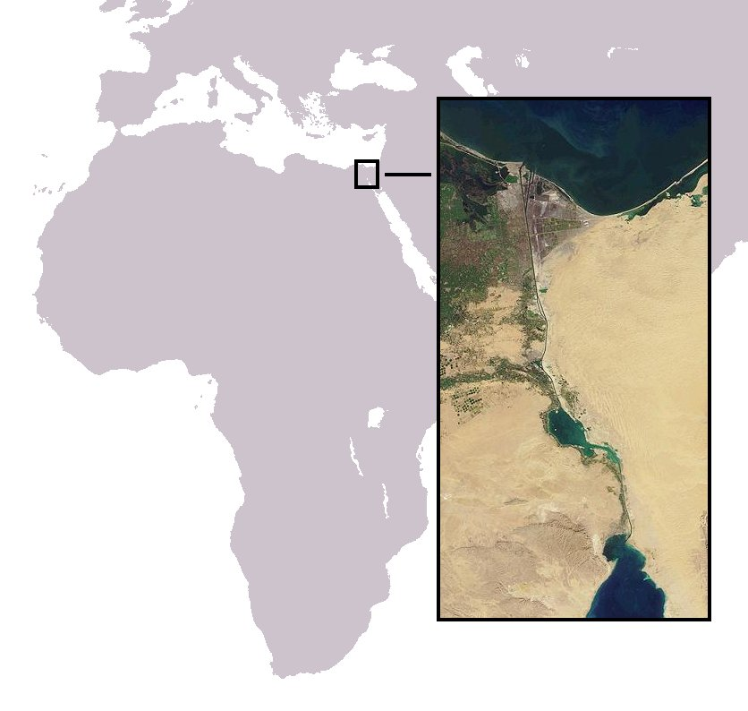

The Suez Canal was opened in 1869, after ten years of work financed by the French and Egyptian governments. The canal was operated by the Universal Company of the Suez Maritime Canal, an Egyptian-chartered company; the area surrounding the canal remained sovereign Egyptian territory and the only land-bridge between Africa and Asia.
The canal instantly became strategically important, as it provided the shortest ocean link between the Mediterranean and the Indian Ocean. The canal eased commerce for trading nations and particularly helped European colonial powers to gain and govern their colonies.
In 1875, as a result of debt and financial crisis, Egypt was forced to sell its shares in the canal operating company to the British government of Benjamin Disraeli. They were willing buyers and obtained a 44% share in the Suez Canal Company for £4 million (£472 million[citation needed] in 2020). This maintained the majority shareholdings of the mostly-French private investors.
With the 1882 invasion and occupation of Egypt, the UK took de facto control of the country as well as the canal proper, its finances and operations. The 1888 Convention of Constantinople declared the canal a neutral zone under British protection.
In ratifying it, the Ottoman Empire agreed to permit international shipping to pass freely through the canal, in time of war and peace. The Convention came into force in 1904, the same year as the Entente cordiale between Britain and France.
Despite this convention, the strategic importance of the Suez Canal and its control were proven during the Russo-Japanese War of 1904–1905, after Japan and Britain entered into a separate bilateral agreement. Following the Japanese surprise attack on the Russian Pacific Fleet based at Port Arthur, the Russians sent reinforcements from their fleet in the Baltic Sea.
The British denied the Russian fleet use of the canal and forced it to steam around Africa, giving the Japanese forces time to consolidate their position in East Asia.
The importance of the canal as a strategic intersection was again apparent during the First World War, when Britain and France closed the canal to non-Allied shipping. The attempt by German-led Ottoman forces to storm the canal in February 1915 led the British to commit 100,000 troops to the defence of Egypt for the rest of the war
Objectives and Planning
Britain was anxious lest it lose efficient access to the remains of its empire. Both Britain and France were eager that the canal should remain open as an important conduit of oil.
Both the French and the British felt that Nasser should be removed from power. The French "held the Egyptian president responsible for assisting the anti-colonial rebellion in Algeria". France was nervous about the growing influence that Nasser exerted on its North African colonies and protectorates.
Israel wanted to reopen the Straits of Tiran leading to the Gulf of Aqaba to Israeli shipping, and saw the opportunity to strengthen its southern border and to weaken what it saw as a dangerous and hostile state.
This was particularly felt in the form of attacks injuring approximately 1,300 civilians emanating from the Egyptian-held Gaza Strip.
The Israelis were also deeply troubled by Egypt's procurement of large amounts of Soviet weaponry that included 530 armoured vehicles, of which 230 were tanks; 500 guns; 150 MiG-15 jet fighters; 50 Ilyushin Il-28 bombers; submarines and other naval craft.
The influx of this advanced weaponry altered an already shaky balance of power. Israel was alarmed by the Czech arms deal, and believed it had only a narrow window of opportunity to hit Egypt's army. Additionally, Israel believed Egypt had formed a secret alliance with Jordan and Syria.
In July 1956, IDF chief of staff General Moshe Dayan advised Prime Minister David Ben-Gurion that Israel should attack Egypt at the first chance, but Ben Gurion stated he preferred to attack Egypt with the aid of France.
On 7 August 1956 the French Defense Minister Maurice Bourgès-Maunoury asked Ben Gurion if Israel would attack Egypt together with France, to which he received a positive reply. On 1 September 1956 the French government formally asked that France and Israel begin joint planning for a war against Egypt.
By 6 September 1956, Dayan's chief of operations General Meir Amit, was meeting with Admiral Pierre Barjot to discuss joint Franco-Israeli operations. On 25 September 1956 Peres reported to Ben Gurion that France wanted Israel as an ally against Egypt, and that the only problem was Britain, which was opposed to Israel taking action against Nasser.
In late September 1956, the French Premier Guy Mollet had embarked upon a dual policy of attacking Egypt with Britain, and if the British backed out (as Mollet believed that they might), with Israel. On 30 September 1956 secret Franco-Israeli talks on planning a war started in Paris, which were based on the assumption that Britain would not be involved.
The French very much wanted to use airfields in Cyprus to bomb Egypt, but being not certain about Britain's attitude, wanted to use Israeli airfields if the ones in Cyprus were not free. Only on 5 October 1956 during a visit by General Maurice Challe to Britain where he met with Eden, were the British informed of the secret Franco-Israeli alliance.
On 22 October 1956, during negotiations leading to the Protocol of Sèvres, David Ben-Gurion, Prime Minister of Israel, gave the most detailed explanation ever to foreign dignitaries, of Israel's overall strategy for the Middle East. Shlaim called this Ben-Gurion's "grand design".
His main objection to the "English plan" was that Israel would be branded as the aggressor while Britain and France would pose as peace-makers.
Instead he presented a comprehensive plan, which he himself called "fantastic", for the reorganization of the Middle East. Jordan, he observed, was not viable as an independent state and should therefore be divided. Iraq would get the East Bank in return for a promise to settle the Palestinian refugees there and to make peace with Israel while the West Bank would be attached to Israel as a semi-autonomous region.
Lebanon suffered from having a large Muslim population which was concentrated in the south. The problem could be solved by Israel's expansion up to the Litani River, thereby helping to turn Lebanon into a more compact Christian state. ... Israel declares its intention to keep her forces for the purpose of permanent annexation of the entire area east of the El Arish-Abu Ageila, Nakhl-Sharm el-Sheikh,
in order to maintain for the long term the freedom of navigation in the Straits of Eilat and in order to free herself from the scourge of the infiltrators and from the danger posed by the Egyptian army bases in Sinai. ... "I told him about the discovery of oil in southern and western Sinai, and that it would be good to tear this peninsula from Egypt because it did not belong to her,
rather it was the English who stole it from the Turks when they believed that Egypt was in their pocket. I suggested laying down a pipeline from Sinai to Haifa to refine the oil."
The War
Operation Kadesh received its name from ancient Kadesh, located in the northern Sinai and mentioned several times in the Hebrew Pentateuch. Israeli military planning for this operation in the Sinai hinged on four main military objectives; Sharm el-Sheikh, Arish, Abu Uwayulah (Abu Ageila), and the Gaza Strip. The Egyptian blockade of the Tiran Straits was based at Sharm el-Sheikh and, by capturing the town, Israel would have access to the Red Sea for the first time since 1953, which would allow it to restore the trade benefits of secure passage to the Indian Ocean.
The Gaza Strip was chosen as another military objective because Israel wished to remove the training grounds for Fedayeen groups, and because Israel recognised that Egypt could use the territory as a staging ground for attacks against the advancing Israeli troops. Israel advocated rapid advances, for which a potential Egyptian flanking attack would present even more of a risk. Arish and Abu Uwayulah were important hubs for soldiers, equipment, and centres of command and control of the Egyptian Army in the Sinai.
Israeli M4A4 Shermans were also used in the Sinai campaign.
Capturing them would deal a deathblow to the Egyptian's strategic operation in the entire Peninsula. The capture of these four objectives were hoped to be the means by which the entire Egyptian Army would rout and fall back into Egypt proper, which British and French forces would then be able to push up against an Israeli advance, and crush in a decisive encounter. On 24 October, Dayan ordered a partial mobilisation. When this led to a state of confusion, Dayan ordered full mobilisation, and chose to take the risk that he might alert the Egyptians. As part of an effort to maintain surprise, Dayan ordered Israeli troops that were to go to the Sinai to be ostentatiously concentrated near the border with Jordan first, which was intended to fool the Egyptians into thinking that it was Jordan that the main Israeli blow was to fall on.
An Israeli Air Force Meteor in flight
On 28 October, Operation Tarnegol was effected, during which an Israeli Gloster Meteor NF.13 intercepted and destroyed an Egyptian Ilyushin Il-14 carrying Egyptian officers en route from Syria to Egypt, killing 16 Egyptian officers and journalists and two crewmen. The Ilyushin was believed to be carrying Field Marshal Abdel Hakim Amer and the Egyptian General Staff; however this was not the case.
The conflict began on 29 October 1956. At about 3:00 pm, Israeli Air Force Mustangs launched a series of attacks on Egyptian positions all over the Sinai. Because Israeli intelligence expected Jordan to enter the war on Egypt's side, Israeli soldiers were stationed along the Israeli-Jordanian frontier. The Israel Border Police militarised the Israel-Jordan border, including the Green Line with the West Bank, during the first few hours of the war. Israeli-Arab villages along the Jordanian border were placed under curfew. This resulted in the killings of 48 civilians in the Arab village of Kafr Qasim in an event known as the Kafr Qasim massacre. The border policemen involved in the killings were later tried and imprisoned, with an Israeli court finding that the order to shoot civilians was "blatantly illegal". This event had major effects on Israeli law relating to the ethics in war and more subtle effects on the legal status of Arab citizens of Israel, who at the time were regarded as a fifth column.
Early actions in Southern Sinai
Israeli paratrooper near the Mitla Pass
Israeli soldiers in the Sinai wave at a passing French plane
The IDF chief of staff, General Moshe Dayan, first planned to block the vital Mitla Pass. Dayan planned for the Battalion 890 of the Paratroop Brigade, under the command of Lieutenant Colonel Rafael Eitan, a veteran of the 1948 Arab–Israeli War and future head of the IDF, to drop at Parker's Memorial, near one of the defiles of the pass, Jebel Heitan.The rest of the brigade, under the command of Colonel Ariel Sharon would then advance to meet with the battalion, and consolidate their holdings.
On 29 October, Operation Kadesh – the invasion of the Sinai, began when an Israeli paratrooper battalion was air-dropped into the Sinai Peninsula, east of the Suez Canal near the Mitla Pass. In conjunction with the para drop, four Israeli P-51 Mustangs using their wings and propellers, cut all overhead telephone lines in the Sinai, severely disrupting Egyptian command and control.Due to a navigation error, the Israeli DC-3 transports landed Eitan's 400 paratroopers three miles away from Parker's Memorial, their intended target. Eitan marched his men towards Jebel Heitan, where they dug in while receiving supplies of weapons dropped by French aircraft.
At the same time, Colonel Sharon's 202nd Paratroop Brigade raced out towards the Mitla Pass. A major problem for Sharon was vehicle break-down. Dayan's efforts to maintain strategic surprise bore fruit when the Egyptian commander Field Marshal Abdel Hakim Amer at first treated the reports of an Israeli incursion into the Sinai as a large raid instead of an invasion, and as such Amer did not order a general alert. By the time that Amer realised his mistake, the Israelis had made significant advances into the Sinai.
Early actions along the Gulf of Aqaba, and the central front
As the paratroopers were being dropped into the Sinai, the Israeli 9th Infantry Brigade captured Ras al-Naqb, an important staging ground for that brigade's later attack against Sharm el-Sheikh. Instead of attacking the town by a frontal attack, they enveloped the town in a night attack, and negotiated their way through some of the natural chokepoints into the rear of the town, surprising the Egyptians before they could ready themselves to defend. The Egyptians surrendered, with no Israeli casualties sustained.
The 4th Infantry Brigade, under the command of Colonel Josef Harpaz, captured al-Qusaymah, which would be used as a jumping off point for the assault against Abu Uwayulah. Colonel Harpaz out-flanked al-Qusaymah with two pincers from the south-east and north-east in a night attack. In a short battle lasting from 3:00 am to sunrise, the IDF stormed al-Qusaymah.
Battle of Jebel Heitan, paratroop brigade under attack
Israeli paratroopers dig in near the Parker Memorial
The portion of the paratroopers under Sharon's command continued to advance to meet with the 1st Brigade. En route, Sharon assaulted Themed in a dawn attack, and was able to storm the town with his armour through the Themed Gap. Sharon routed the Sudanese police company, and captured the settlement. On his way to the Nakla, Sharon's men came under attack from Egyptian MIG-15s. On the 30th, Sharon linked up with Eytan near Nakla.
Dayan had no more plans for further advances beyond the passes, but Sharon decided to attack the Egyptian positions at Jebel Heitan. Sharon sent his lightly armed paratroopers against dug-in Egyptians supported by aircraft, tanks and heavy artillery. Sharon's actions were in response to reports of the arrival of the 1st and 2nd Brigades of the 4th Egyptian Armored Division in the area, which Sharon believed would annihilate his forces if he did not seize the high ground. Sharon sent two infantry companies, a mortar battery and some AMX-13 tanks under the command of Mordechai Gur into the Heitan Defile on the afternoon of 31 October 1956.
Israeli AMX-13 Light tank
The Egyptian forces occupied strong defensive positions and brought down heavy anti-tank, mortar and machine gun fire on the IDF force. Gur's men were forced to retreat into the "Saucer", where they were surrounded and came under heavy fire. Hearing of this, Sharon sent in another task force while Gur's men used the cover of night to scale the walls of the Heitan Defile. During the ensuing action, the Egyptians were defeated and forced to retreat. A total of 260 Egyptian and 38 Israeli soldiers were killed in the battle.
Although the battle was an Israeli victory, the casualties sustained would surround Sharon with controversy. In particular, Sharon was criticised for ordering the attack on Jebel Heitan without authorisation, and not realising that with the Israeli Air Force controlling the skies, his men were in not such danger from the Egyptian tanks as he believed. Dayan himself maintained that Sharon was correct to order the attack without orders, and that under the circumstances, Sharon made the right decision; instead he criticised Sharon for his tactics of attacking the Egyptians head-on, which Dayan claimed led to unnecessary casualties
Air operations, first phase
File:1956-11-01 War in Egypt.ogv
Universal Newsreel from 1 November about the attack on Egypt
From the outset, the Israeli Air Force flew paratroop drops, supply flights and medevac sorties. Israel's new French-made Dassault Mystere IV jet fighters provided air cover for the transport aircraft. In the initial phase of the conflict, the Egyptian Air Force flew attack missions against advancing Israeli ground forces. The Egyptian tactic was to use their new Soviet-made MiG-15 jets as fighter escorts, while their older British-made De Havilland Vampire and Gloster Meteor jets conducted strikes against Israeli troops and vehicles.
In air combat, Israeli aircraft shot down between seven and nine Egyptian jets with the loss of one plane, but Egyptian strikes against the ground forces continued through to 1 November. In a major action on 31 October, waves of Israeli planes attacked the Egyptian 1st Armored Brigade as it moved toward Abu-Ageila, devastating it. According to an Israeli pilot who participated in the attack "Car after car and tank after tank caught fire... At first it looked like a peacetime firing range." Eight Egyptian MiG-15s attacked the Israeli aircraft, damaging two, while Egyptian anti-aircraft fire hit five more Israeli aircraft and killed two pilots. On the following day, with the Anglo-French entry into the war, a combined force of Israeli and French aircraft again attacked the Egyptian 1st Armored Brigade. With the attack by the British and French air forces and navies, President Nasser ordered his pilots to disengage and fly their planes to bases in southern Egypt. The Israeli Air Force was then free to strike Egyptian ground forces at will, as Israeli forces advanced into the western Sinai.
On 3 November, Israeli Mystere fighter jets attacked a British warship, the Black Swan class sloop HMS Crane as it was patrolling the approaches to the Gulf of Aqaba after it had been mistaken for an Egyptian warship. The ship was attacked with rockets, cannon fire, and napalm bombs. The attack inflicted widespread damage on the hull, damaging two antiaircraft guns, destroying a depth charge thrower, and cutting various electrical circuits and water mains, but the ship's fighting efficiency was only slightly impaired. Three crewmen were wounded in the attack. The ship put up heavy anti-aircraft fire, and there are conflicting accounts as to whether or not it shot down one of the attacking jets.